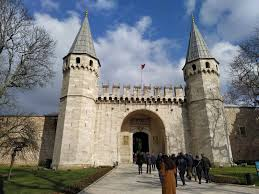
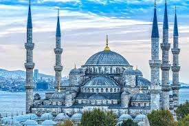
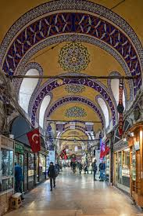

Kültürel Miras
Topkapı Sarayı
Osmanlı padişahlarının yaşadığı, tarihin derin izlerini taşıyan önemli bir yapıdır.
Sultanahmet Camii
İstanbul’un en ünlü camilerinden biridir ve mimarisiyle dikkat çeker.
Kapalıçarşı
Yüzlerce yıllık tarihi ile İstanbul’un ticaret kalbinin attığı yerdir.